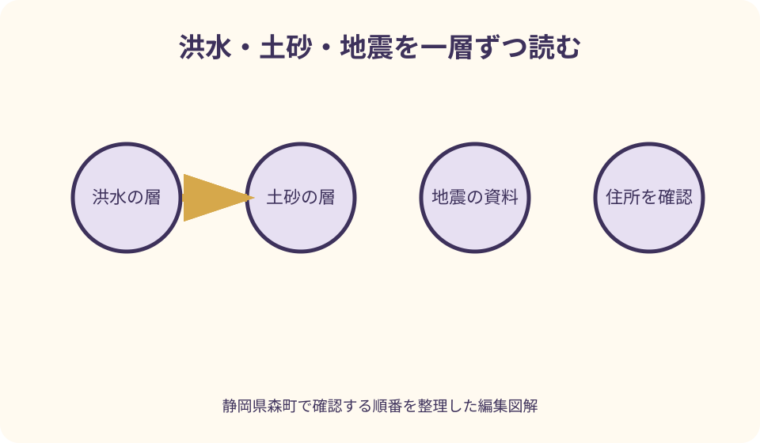
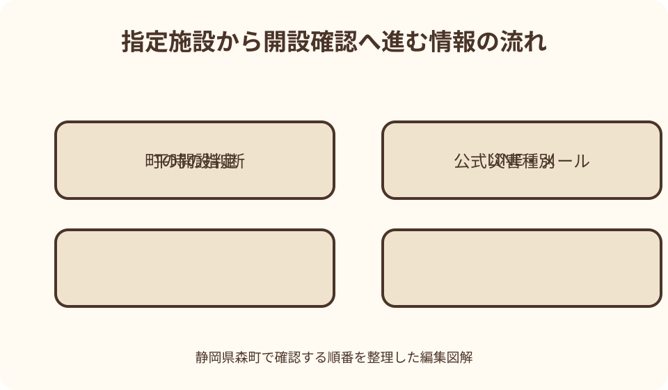

防災・ハザードマップ・避難｜最終確認 2026-08-10
静岡県森町の防災・ハザードマップの読み方｜洪水・土砂・地震を分けて備える
ハザードマップは『安全な場所を保証する地図』ではありません。森町の洪水、土砂、地震などの想定を災害種別ごとに確認し、現在の気象・避難情報と組み合わせるための基礎資料です。色が付いた地点だけを見るのではなく、自宅や旅行先の住所、そこまでの経路、夜間、家族の条件を別々に照合します。

ハザードマップの役割を限定して使う
森町公式の防災情報ページには、防災ハザードマップ、防災ガイドブック、気象・河川情報への入口があります。地図単体ではなく、この入口から最新版を選びます。
地図の色は想定条件に基づく範囲や程度を示します。現実の災害が色の境界で止まる、色のない地点なら被害が起きないという保証ではありません。
印刷版を持つ場合は、発行・更新時点を表紙や奥付で確認します。古い版しかないときは保管用に残しても、判断は町公式の現行資料へ戻ります。
凡例、縮尺、方位、注記を先に読みます。赤、黄、青などの色を一般的な危険度の感覚だけで解釈せず、その地図が定義する意味を確認します。
ハザードマップで最終的な避難行動を独自に決めず、町が発する避難情報、施設の開設、警察・消防・気象機関の情報を組み合わせます。
洪水・土砂・地震を一枚に重ねない
最初は洪水の層だけを表示し、河川、浸水想定、深さや継続に関する凡例を読みます。土砂や地震の色を同時表示すると、何の想定か分からなくなります。
次に洪水を閉じ、土砂の層だけを開きます。急傾斜地、土石流、地すべり等が区別されている場合は、色と記号を個別に確認します。
最後に地震の情報を別画面または別紙で見ます。揺れ、液状化、建物、火災など、資料が何を示すかを確認し、洪水の深さと同じ尺度で比較しません。
三種類を確認した結果は、住所ごとに三行へ書きます。『洪水ではこの注記』『土砂ではこの記号』『地震ではこの資料』と分ければ、家族へ説明できます。
比較は最後に行います。色を合成した一枚を作るのではなく、災害ごとに避けたい経路、確認先、開設され得る施設が異なることを一覧にします。
住所検索は番地と地形を両方見る
自宅、勤務先、学校、宿泊先、観光施設は、名称だけでなく住所を控えます。同名施設や広い敷地では、入口と建物の位置が地図上で異なることがあります。
検索結果のピンが道路中央や敷地代表点へ落ちる場合があるため、航空写真、建物形状、道路、川、斜面との位置を見比べます。
色の境界付近は、ピンの大きさだけで内外を断定しません。町の地図の縮尺と凡例を確認し、必要なら危機管理課など公式の問合せ先へ相談します。
マンションや学校は階によって想定の意味が変わる注記がある場合があります。建物名だけで判断せず、指定緊急避難場所一覧の備考も読みます。
住所を家族へ送るときは、地図リンクだけでなく施設名、番地、確認した災害種別、確認日を文章で添えます。リンクが開けない場合にも照合できます。

旅行先は目的地より往復経路を先に確認
森町の観光地は町なか、河川沿い、神社、山間部に分かれます。施設の敷地だけでなく、駅・インターチェンジからそこへ向かう道路や橋を地図へ置きます。
自宅側が晴れていても森町の上流域や山間部が同じ天候とは限りません。訪問日の気象情報と、目的地までの各地域の警報を確認します。
観光施設が営業と発信していても、旅行者の経路が通行可能かは別です。道路管理者、鉄道・バス事業者、町の防災情報を追加します。
日帰りでは帰宅経路を二つに増やすより、悪化前に訪問をやめる基準を決めます。迂回路が同じ川や斜面に沿う場合、代替にならない可能性があります。
宿泊時は宿へ、災害時の館内案内、集合場所、夜間連絡、車の移動指示を確認します。旅行者が独自に最寄り避難所へ向かうことが最善とは限りません。
指定緊急避難場所と指定避難所を区別する
森町の地域防災計画は、指定緊急避難場所を切迫した危険から命を守るための場所、指定避難所を一定期間避難生活する施設として区別しています。
同じ施設が両方を兼ねる場合もあれば、災害種別や利用部分に条件が付く場合もあります。一覧の丸印・三角印・備考を凡例とともに読みます。
洪水では建物の上階、土砂では一部を除くなど、施設名だけでは分からない条件が記載される例があります。現地へ着けば全館使えるとは考えません。
緊急物資集積場所、救護所、防災ヘリポートは、一般の避難所と目的が異なります。地図上の防災記号を見て避難先として選びません。
自宅に近い施設を一つだけ覚えるのではなく、自分が想定する災害に対応するか、そこまでの経路を含めて町の資料で確認します。
指定されていることと開設中を分ける
町指定避難所の一覧に載ることは、災害時に常時開いていることを意味しません。災害種別と状況に応じて町が開設し、開設状況を広報します。
平時に施設へ行き、入口が閉まっているから避難所ではないと判断するのも誤りです。平時の管理と災害時の開設は別です。
災害時は町公式LINE、防災メール、同報無線、町サイト等、町が案内する媒体から『どこが開設されたか』を確認します。
検索結果の避難所一覧や地図アプリのラベルは開設状況ではありません。更新時刻がある町の情報へ戻ります。
通信できず開設が分からないとき、遠い指定施設へ車で向かう判断を独自にしません。現在地の状況、周囲の公的な案内、施設・宿の管理者の指示を優先します。
豪雨時は新しい移動を始めない判断を持つ
大雨が強まってから地図を見て、川や斜面を越える長い移動を始めるのは負担が増えます。旅行や外出は、警報級の可能性や交通情報が出た段階で中止・短縮を検討します。
森町公式の防災情報には、気象警報、降水、洪水危険度など外部情報への入口があります。一つの天気アプリだけで移動可否を決めません。
町の自然災害案内は、河川近く、傾斜地、山間部など地形に応じた対応が必要だと説明しています。自分の現在地がどの地形にあるかを確認します。
車があるから移動できる、四輪駆動なら進めるとは考えません。冠水の深さ、流れ、路肩、通行止めは車種だけで解決しません。
避難に関する具体的な指示が出た場合は、その内容と対象地域を確認します。本稿の一般論より、その時点の町・警察・消防等の案内を優先します。
河川情報は水位の数字だけで自己判断しない
森町水防計画は、河川の洪水や内水への警戒と対応を定める町の計画です。旅行者が水位表の数字だけで安全判定を行うための資料ではありません。
河川カメラや水位観測を見る場合、観測地点名、時刻、上流・下流、欠測の有無を確認します。目的地近くの見た目と同じ状態とは限りません。
雨が弱くなっても上流からの流れで水位が変わることがあります。現在の雨音だけを根拠に河川敷や橋へ様子を見に行きません。
洪水危険度分布、警報、町の避難情報は役割が異なります。一つの表示が低く見えても、別の公的情報を無視しません。
花火、キャンプ、釣り、川遊びなど河川周辺の予定は、施設・主催者の中止判断と自分の経路を確認し、迷う場合は近づかない選択を取ります。
車中・夜間の判断を昼間と分ける
夜間は浸水、落石、倒木、路肩、側溝を目で確認しにくくなります。昼に通れた道路が夜も同じ条件とは考えません。
車中にいる場合、エンジン、燃料、排気、冠水、暑さ・寒さ、トイレを考えます。車内待機が常に屋内より安全とは保証されません。
駐車場所が川沿い、低い場所、斜面下かを平時にハザードマップで確認します。災害が近づいてから暗闇で移動先を探す計画にしません。
夜の観光・イベントでは、帰路が規制や運休で変わる可能性があります。主催者の中止だけでなく、道路・鉄道・バスの公式情報を見ます。
運転者が眠い、飲酒している、視界が悪い場合は、災害回避を理由に無理な運転を始めません。宿、施設、警察等の公的案内へ相談します。
通信切れに備えて紙と端末へ保存する
ハザードマップの必要ページ、避難所一覧、宿・家族の連絡先を端末へ保存します。ブラウザのタブだけでは通信が切れると再表示できない場合があります。
紙には自宅・宿・目的地、災害種別ごとの候補、家族集合の原則を書きます。避難所の開設は変わるため、固定的に『必ずここ』とは書きません。
スマートフォンは充電器、モバイルバッテリー、節電設定を準備します。位置情報や動画を使い続けて電池を消耗しません。
森町防災メールは公式LINEを利用しない人向けの防災配信として町が案内しています。平時に登録手順と受信設定を確認します。
災害用伝言サービスなど町公式が案内する安否確認手段も家族で練習します。ただし実際の利用条件と方法は提供者の最新案内へ従います。
家族共有は行動カード一枚にまとめる
家族カードには、住所、現在地、災害種別、町の情報確認先、開設確認の方法、集合の原則、連絡先を書きます。地図の色だけを共有しません。
乳幼児、高齢者、障害、服薬、アレルギー、ペットなど、移動時間と持出品へ影響する条件を家族ごとに記載します。
家族が別々の場所にいるとき、全員が自宅へ戻ることを固定ルールにすると移動が増える場合があります。各自がその場の公的案内を優先する原則を話し合います。
集合場所は一か所だけでなく、連絡できない場合の確認方法を決めます。ただし災害種別で適否が変わるため、施設の開設状況を確認する前提にします。
年に一度ではなく、引越し、通学・通勤変更、宿泊旅行、地図更新のたびにカードを見直します。子どもにも施設名だけでなく、係員へ助けを求める方法を伝えます。

観光客が持つ小さな防災セット
日帰りでも、飲料、補食、常用薬、ライト、充電手段、雨具、身分・連絡情報を持ちます。旅行先で購入できることを前提にしません。
山間部や夜間イベントでは、両手が使える荷物にします。傘、カメラ、土産で手が塞がると、暗い道や段差で行動しにくくなります。
車には地図、充電、飲料、季節に応じた防寒・暑さ対策を備えます。ただし装備があることを悪天候の中で走る理由にしません。
宿泊者はチェックイン時に非常口、館内放送、夜間連絡、停電時の照明を確認します。宿の避難計画をハザードマップだけで上書きしません。
土産や大きな機材は、防災上の必携品より優先しません。警報の可能性が高い日は旅行そのものを中止し、荷造りで解決しようとしないことが重要です。
良い点
森町公式はハザードマップ、防災ガイド、避難所、水防計画、気象・河川情報、配信手段を同じ防災分野からたどれるようにしています。
指定緊急避難場所の資料では、洪水、土砂、地震等の対応と、一部使用を示す備考を施設ごとに確認できます。名称だけより具体的です。
防災メールと公式LINEという複数の配信入口が案内され、スマートフォンの利用方法に応じて選択できます。
住民だけでなく旅行者も、住所と経路が分かれば平時に同じ資料を使えます。観光施設の営業確認へ防災情報を追加する習慣を作れます。
注文したい点
ハザードマップ、現在の警報、避難情報、開設中施設、交通情報を一つのモバイル画面から切り替えられると、旅行者も災害種別を混ぜずに確認できます。
避難所一覧には『指定』と『現在開設中』を明確に分け、最終更新時刻、対象災害、利用可能な階・区域を表示してほしいところです。
住所検索では、施設代表点だけでなく入口、敷地範囲、橋・斜面・河川を同時表示できると経路まで読みやすくなります。
PDFはオフライン保存用として残しつつ、凡例を拡大しやすい画像、読み上げ対応のテキスト、多言語版も充実すると利用者が増えます。
観光協会や主要施設から町防災ページへ常設リンクがあれば、旅行中に検索語を考えず最新の公式入口へ戻れます。
代案・結論
地図が読みづらい場合は、色を自己流で断定せず、住所と災害種別を整理して町の危機管理窓口へ平時に問い合わせます。
大雨や地震後に旅行経路が不明なら、代替観光地を探すより移動中止を優先します。営業している施設があることと、そこへ安全に着けることは別です。
指定避難所が近くても開設を確認できない場合、そこへ必ず入れると考えません。町・施設・現地係員の最新案内を確認します。
結論は、洪水、土砂、地震を別々に読み、住所と経路を確認し、指定施設と開設情報を分け、豪雨前に移動を止める基準を家族で共有することです。
大石の視点
ハザードマップ記事で私が避けたいのは、色のない場所を『安全』、色のある場所を一律に『危険』と断定することです。想定条件と凡例を読まずに安心も恐怖も作りません。
避難所一覧を貼るだけの記事も不十分です。指定されている施設と、今まさに開いている施設の違いを書かなければ、災害時の誤移動を招きます。
私は専門家の現地判断を装いません。町の地図・計画・配信を読む順序を示し、具体の災害時は公的な最新指示へ従う境界を守ります。
旅行では『せっかく来たから』が判断を遅らせます。雨が強くなる前に観光をやめ、宿や自宅へ戻る余裕を取ることは、旅を失敗させるのではなく次の訪問を守ります。
家族全員が同じ地図を持つだけでなく、どの災害の図を見ているか、開設情報をどこで見るかを言葉で共有する。そこまでできて初めて地図が行動の道具になります。
公式情報・確認先
掲載内容は次の一次情報を基礎に整理しました。営業、料金、催し、交通は変わるため、出発前または手続き前にリンク先で最新情報を確認してください。
- 防災情報（静岡県森町、2026-08-10確認）
- 町指定避難所等について（静岡県森町、2026-08-10確認）
- 森町地域防災計画（静岡県森町、2026-08-10確認）
- 森町防災メール（静岡県森町、2026-08-10確認）
- 森町水防計画（静岡県森町、2026-08-10確認）
- 自然災害 台風・集中豪雨・地震（静岡県森町、2026-08-10確認）